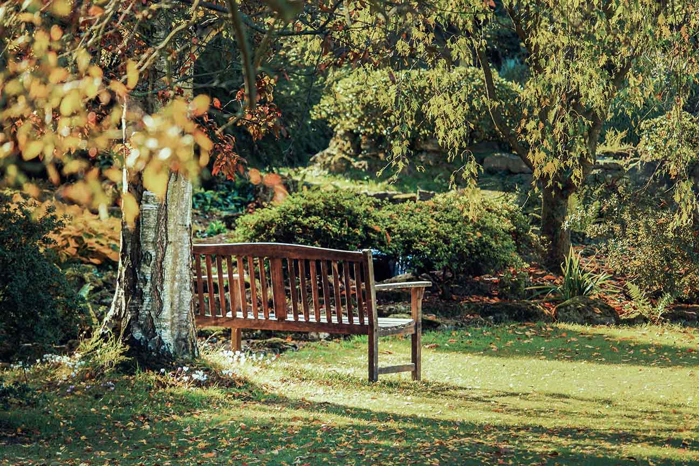
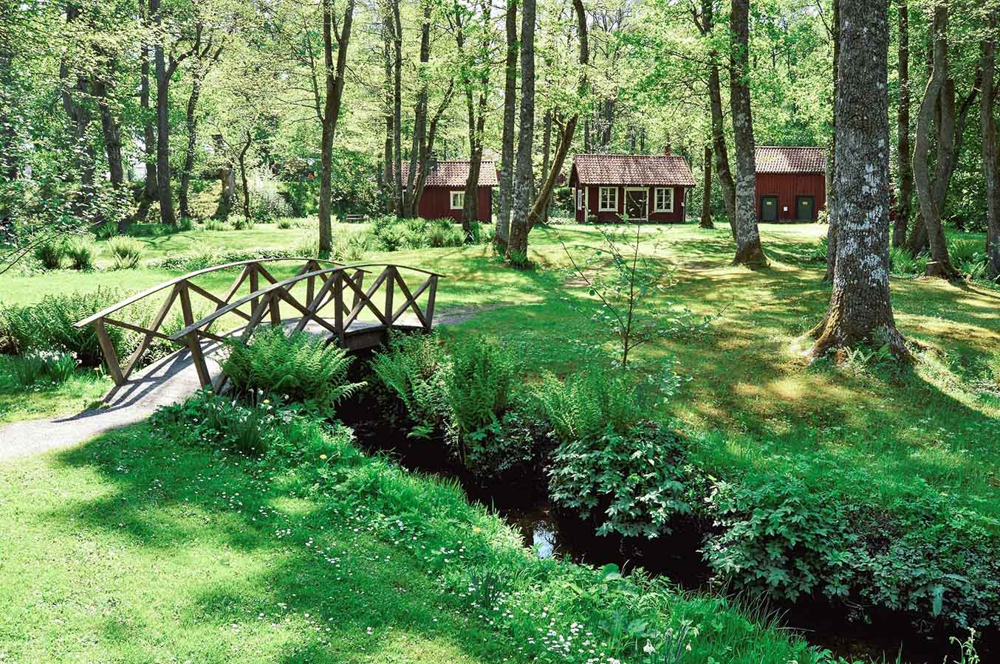

A multi-structure family compound spanning 500 acres in the Texas Hill Country, with approximately 50 acres of intensive landscape development.
client
H-E-B Family
location
Wimberley, Texas
scope
$1.2M Landscape
About the Project
This project involved design and project management for a family compound belonging to a grandchild of H-E-B's founder. The property spans 500 acres in the Texas Hill Country near Wimberley, with approximately 50 acres of intensive development including the main residence, guest houses, game house, horse paddocks, and a network of roads with integrated drainage solutions.

Working closely with the development team, I managed all landscape elements while ensuring integration with structures, roads, and site drainage across the property.
When you're working at this scale, everything connects. The drainage solutions had to work with the road network, which had to work with the horse paddock placement, which had to work with the views from the main house. One decision ripples across 50 acres.
Scope & Challenges
A project of this scale presents unique coordination challenges. Multiple structures were being built simultaneously across the property, each with its own landscape requirements that needed to integrate into a cohesive whole.
Key elements of the landscape scope included:
Road network with integrated drainage - Managing water flow across 50 developed acres
Horse paddock surroundings - Functional and aesthetic considerations for equestrian use
Multiple residence landscapes - Main house, guest houses, and game house each with distinct character
Native plant integration - Working with Hill Country ecology rather than against it
The timeline required careful sequencing of work across multiple phases of construction, coordinating with builders, architects, and the family throughout.

My Role
I served as the landscape designer and project manager for this engagement, working under Structure Landscapes. My responsibilities included:
Design development - Creating the landscape vision for each area of the property
Coordination with development team - Ensuring landscape solutions integrated with structures and infrastructure
Project management - Overseeing installation crews and managing timeline
Problem solving - Adapting plans as construction revealed new challenges
This project represents the kind of complex, multi-phase work where having someone who understands both design vision and construction reality makes the difference between a project that flows and one that stalls.
Three properties. One riverside vision. A bold transformation of Lake Austin’s most iconic estate, where luxury, topography, and native ecology converge into a singular, high-performing landscape.